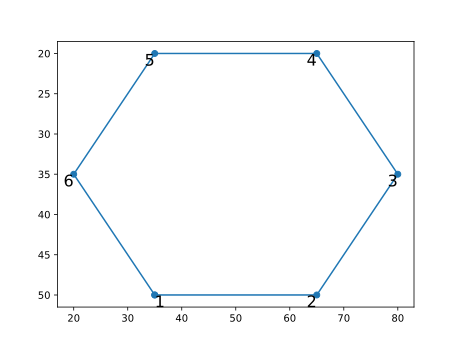
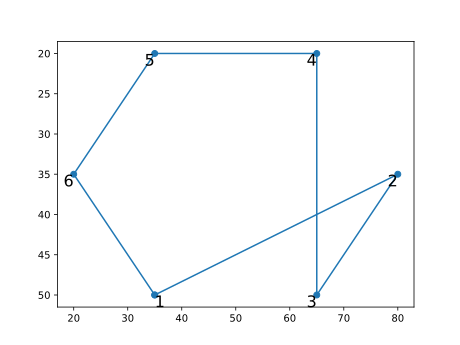
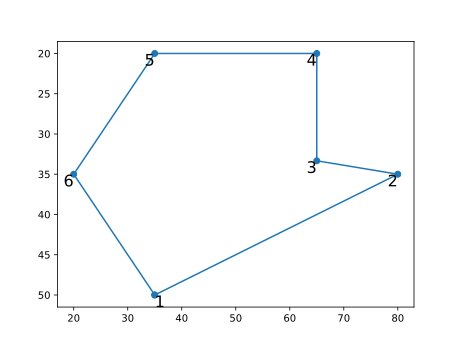

GeoPoly
User guide
GeoPoly is a Julia utility contained in the package MagGravPoly and developed for handling polygonal shapes in the framework of 2D to 2.75D potential-fields forward and inverse modeling.
Tutorial
Check the orientation of a polygon
First load the module and define a list of vertices of the poligonal bodies and the relative indices mapping each body to its vertices:
using MagGravPoly.GeoPoly
# vertices of the poligonal bodies
vertices = [35.0 50.0;
65.0 50.0;
80.0 35.0;
65.0 20.0;
35.0 20.0;
20.0 35.0]
# indices of vertices for the body
ind1 = collect(1:6)
bodyindices = [ind1]
# construct the poligonal body object
pbody = PolygBodies2D(bodyindices,vertices)and then checks if the polygon is defined in a clockwise or counter-clockwise order:
# check about the order
for i=1:pbody.nbo
aclk = checkanticlockwiseorder(pbody.bo[i])
@show aclk
endaclk = trueIn fact plotting the polygon:
using PyPlot
figure()
for i=1:length(bodyindices)
x = copy(pbody.bo[i].ver1[:,1])
y = copy(pbody.bo[i].ver1[:,2])
append!(x,pbody.bo[i].ver1[1,1])
append!(y,pbody.bo[i].ver1[1,2])
p=PyPlot.plot(x,y,"-o")
for i=1:length(x)-1
s=string(i)
if i<=1
txtalign = "left"
else
txtalign = "right"
end
text(x[i],y[i],s=s,horizontalalignment=txtalign,
fontsize=16,verticalalignment="top")
end
end
gca().invert_yaxis()is easy to see that is counter-clockwise oriented. 
Check and fixing for crossing polygon sides
First load the module and define a list of vertices of the poligonal bodies and the relative indices mapping each body to its vertices:
using MagGravPoly.GeoPoly
# vertices of the poligonal bodies
vertices = [35.0 50.0;
80.0 35.0;
65.0 50.0;
65.0 20.0;
35.0 20.0;
20.0 35.0]
# indices of vertices for the body
ind1 = collect(1:6)
bodyindices = [ind1]
# construct the poligonal body object
pbody = PolygBodies2D(bodyindices,vertices)Now checks for any crossing polygon side:
chk = checkpoly(pbody.bo)
@show chk[1]:selfintersIn fact plotting the polygon:
using PyPlot
figure()
for i=1:length(bodyindices)
x = copy(pbody.bo[i].ver1[:,1])
y = copy(pbody.bo[i].ver1[:,2])
append!(x,pbody.bo[i].ver1[1,1])
append!(y,pbody.bo[i].ver1[1,2])
p=PyPlot.plot(x,y,"-o")
for i=1:length(x)-1
s=string(i)
if i<=1
txtalign = "left"
else
txtalign = "right"
end
text(x[i],y[i],s=s,horizontalalignment=txtalign,
fontsize=16,verticalalignment="top")
end
end
gca().invert_yaxis()
We can try to fix the polygonal geometries using the verpolyshift! function:
# polygon fixing
GeoPoly.verpolyshift!(pbody.bo)and the results will be the following:

Public API
MagGravPoly.GeoPoly — ModuleGeoPoly
A module developed for handling polygonal shapes in the framework of 2D potential field forward and inverse modeling.
Exports
Data structures
MagGravPoly.GeoPoly.BodySegments2D — Typestruct BodySegments2DStructure containing the segments of a polygonal body. To create an instance a set of indices have to be passed on.
Fields
ver1::SubArray: (x,y) for first set of vertices (beginning of segments)ver2::SubArray: (x,y) for second set of vertices (end of segments)nsegm::Integer: total number of segments
MagGravPoly.GeoPoly.PolygBodies2D — Typestruct PolygBodies2DStructure containing a set of polygonal bodies (described by their segments and all vertices). To create an instance, input an array of vectors of indices (of vertices) for each body and the array of all the vertices.
Fields
bo::Vector{MagGravPoly.GeoPoly.BodySegments2D}: array of bodies defined by their verticesnbo::Integer: number of polygonal bodiesallvert::AbstractMatrix{<:Real}: array of all vertices for all bodiesbodyindices::Vector{<:Vector{<:Integer}}: array indices relating to the vertices in allvert
Vertices of the polygonal bodies must be provided counterclockwise to the structure BodySegments2D to perform gravity & magnetic anomaly calculations using the functions in the packages MagGravPoly. To assess this use the function checkanticlockwiseorder.
MagGravPoly.GeoPoly.TopoEdges — TypeJulia structure defining a topography as set of segments characterized by x and z coordinates and both angular coefficient and intercept.
Fields
verx::Vector{Vector{Float64}}: all x couples of topography coordinatesverz::Vector{Vector{Float64}}: all z couples of topography coordinatesmq::Vector{Vector{Float64}}: angular coefficients and segment intersepts of each coordinates couplexz::Matrix{Float64}: 2D array of (x,z) coordinates for topography
Checking-geometries functions
Single polygonal body
MagGravPoly.GeoPoly.intersectpairpoly — Functionintersectpairpoly(
bo::Vector{MagGravPoly.GeoPoly.BodySegments2D}
) -> Bool
Function to check if there are intersections beetween sides of a polygon in respect to neighbour polygons, returning a Boolean value (i.e. true or false).
MagGravPoly.GeoPoly.selfintersectpoly — Functionselfintersectpoly(
bo::MagGravPoly.GeoPoly.BodySegments2D
) -> Bool
Check if there is any self-intersection for a single polygon, returning a Boolean value (i.e. true or false).
MagGravPoly.GeoPoly.checkall — Functioncheckall(
bos::Vector{MagGravPoly.GeoPoly.BodySegments2D},
topo::MagGravPoly.GeoPoly.TopoEdges
) -> Vector{Symbol}
Check if there is any self-intersection considering all polygons beyond to topography crossing, returning three string values.
MagGravPoly.GeoPoly.checkanticlockwiseorder — Functioncheckanticlockwiseorder(
body::MagGravPoly.GeoPoly.BodySegments2D
) -> Bool
Check whether the polygonal body has segments ordered anticlockwise.
Multiple polygonal bodies
MagGravPoly.GeoPoly.checktopo — Functionchecktopo(
topo::MagGravPoly.GeoPoly.TopoEdges,
bo::Vector{MagGravPoly.GeoPoly.BodySegments2D}
) -> Bool
Function to check if there is some polygon crossing the topography, returning a Boolean value (i.e. true or false).
MagGravPoly.GeoPoly.checkpoly — Functioncheckpoly(
bos::Vector{MagGravPoly.GeoPoly.BodySegments2D}
) -> Tuple{Symbol, Symbol}
Check if there is any self-intersection considering all polygons, returning two string values.
Fixing-geometries functions
MagGravPoly.GeoPoly.verpolyshift! — Functionverpolyshift!(
borg::Vector{MagGravPoly.GeoPoly.BodySegments2D}
)
verpolyshift!(
borg::Vector{MagGravPoly.GeoPoly.BodySegments2D},
blow::Union{Nothing, Vector{MagGravPoly.GeoPoly.BodySegments2D}}
)
verpolyshift!(
borg::Vector{MagGravPoly.GeoPoly.BodySegments2D},
blow::Union{Nothing, Vector{MagGravPoly.GeoPoly.BodySegments2D}},
bup::Union{Nothing, Vector{MagGravPoly.GeoPoly.BodySegments2D}}
)
Function to check if there is intersection beetween sides of a polygon, trying to shift polygon vertices in order to avoid intersection. This algorithm shifts the polygon vertices in agreement with the mathematical properties of the Hamiltonian Dynamics.
MagGravPoly.GeoPoly.verpolyallshift! — Functionverpolyallshift!(
borg::Vector{MagGravPoly.GeoPoly.BodySegments2D}
)
verpolyallshift!(
borg::Vector{MagGravPoly.GeoPoly.BodySegments2D},
blow::Union{Nothing, Vector{MagGravPoly.GeoPoly.BodySegments2D}}
)
verpolyallshift!(
borg::Vector{MagGravPoly.GeoPoly.BodySegments2D},
blow::Union{Nothing, Vector{MagGravPoly.GeoPoly.BodySegments2D}},
bup::Union{Nothing, Vector{MagGravPoly.GeoPoly.BodySegments2D}}
)
Function to check if there are intersections beetween sides of a polygon in respect to neighbour polygons, trying to shift polygon vertices in order to avoid intersection. This algorithm shifts the polygon vertices in agreement with the mathematical properties of the Hamiltonian Dynamics.
MagGravPoly.GeoPoly.vertoposhift! — Functionvertoposhift!(
topo::MagGravPoly.GeoPoly.TopoEdges,
bo::Vector{MagGravPoly.GeoPoly.BodySegments2D}
)
vertoposhift!(
topo::MagGravPoly.GeoPoly.TopoEdges,
bo::Vector{MagGravPoly.GeoPoly.BodySegments2D},
blow::Union{Nothing, Vector{MagGravPoly.GeoPoly.BodySegments2D}}
)
vertoposhift!(
topo::MagGravPoly.GeoPoly.TopoEdges,
bo::Vector{MagGravPoly.GeoPoly.BodySegments2D},
blow::Union{Nothing, Vector{MagGravPoly.GeoPoly.BodySegments2D}},
bup::Union{Nothing, Vector{MagGravPoly.GeoPoly.BodySegments2D}}
)
Function to check if there is some polygon crossing the topography, shifting the polygon vertices in order to avoid intersection. This algorithm shifts the polygon vertices in agreement with the mathematical properties of the Hamiltonian Dynamics.
MagGravPoly.GeoPoly.fixall! — Functionfixall!(
topo::MagGravPoly.GeoPoly.TopoEdges,
qbo::Vector{MagGravPoly.GeoPoly.BodySegments2D},
inters::Vector{Symbol}
)
fixall!(
topo::MagGravPoly.GeoPoly.TopoEdges,
qbo::Vector{MagGravPoly.GeoPoly.BodySegments2D},
inters::Vector{Symbol},
indices::Union{Nothing, Vector{Vector{<:Integer}}}
)
fixall!(
topo::MagGravPoly.GeoPoly.TopoEdges,
qbo::Vector{MagGravPoly.GeoPoly.BodySegments2D},
inters::Vector{Symbol},
indices::Union{Nothing, Vector{Vector{<:Integer}}},
lowcon::Union{Nothing, Vector{Float64}}
)
fixall!(
topo::MagGravPoly.GeoPoly.TopoEdges,
qbo::Vector{MagGravPoly.GeoPoly.BodySegments2D},
inters::Vector{Symbol},
indices::Union{Nothing, Vector{Vector{<:Integer}}},
lowcon::Union{Nothing, Vector{Float64}},
upcon::Union{Nothing, Vector{Float64}}
)
Function fixing polygons vertices in order to avoid intersection and topography crossing, changing sign to the corresponding elements in the momentum array. This algorithm is in agreement with the mathematical properties of the Hamiltonian Dynamics.
Useful functions
MagGravPoly.GeoPoly.checkbodyindices — Functioncheckbodyindices(
bodyindicesorg::Vector{<:Vector{<:Integer}},
verticesorg::AbstractMatrix{<:Real}
) -> Tuple{Vector{<:Vector{<:Integer}}, Any}
Function to check all polygons' vertices and bodyindices in order to make sure that vertices in common among polygons appear only once.
MagGravPoly.GeoPoly.Inter2Segm — FunctionInter2Segm(
P1x::Float64,
P1z::Float64,
P2x::Float64,
P2z::Float64,
P3x::Float64,
P3z::Float64,
P4x::Float64,
P4z::Float64
) -> Union{Nothing, Matrix{Float64}}
Function to check if there is intersection beetween two segments, defined by their vertices. The output returns the (x,z) coordinates of the point in the case of intersection.
MagGravPoly.GeoPoly.isInternal — FunctionisInternal(
bo::MagGravPoly.GeoPoly.BodySegments2D,
px::Float64,
pz::Float64
) -> Bool
Function to check if a point is internal to a polygon.
MagGravPoly.GeoPoly.checkmodelizdim — Functioncheckmodelizdim(
topo::MagGravPoly.GeoPoly.TopoEdges,
bo::Vector{MagGravPoly.GeoPoly.BodySegments2D},
perc::Real
)
Function to check if the topography extends both righward and leftward beyond the outermost polygons by a user-defined percentage (> 25%).
MagGravPoly.GeoPoly.calcareapoly — FunctionCalculate the area of a single polygon given a `BodySegments2D` structure.
Returns the value of the area.MagGravPoly.GeoPoly.calcareamanypoly — FunctionCalculate area of a set of polygons given a `PolygBodies2D` structure.
Returns a vector where each element is the area of one of the polygons.